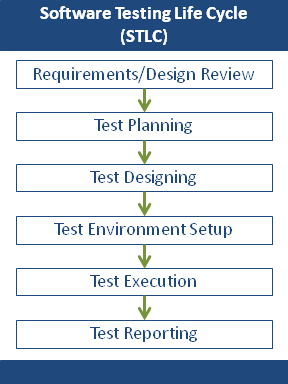

Software Testing Life Cycle Basics inShare24 Software Testing Life Cycle (STLC) defines the steps/stages/phases in testing of software. However, there is no fixed standard of STLC in the world and it basically varies as per the following:
- Software Development Life Cycle
- Whims of the Management
Nevertheless, Software Testing Life Cycle, in general, comprises of the following phases:
